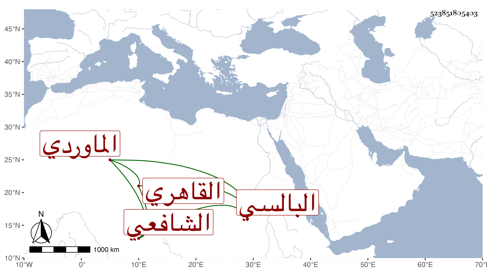

0902Sakhawi.DawLamic.ITO20230111-ara1.EIS1600.523851805403
Biography ID: 523851805403
596
أحمد بن محمد الشهاب البالسي الأصل القاهري الشافعي الماوردي ابن أخت النواجي . ممن اشتغل قليلا وسمع الحديث وتنزل في الجمالية وغيرها ونسخ بخطه الضعيف أشياء كل ذلك مع تكسبه بالوراقين وكان يقرأ على التقي القلقشندي في العمدة حين كان ينوب عن ابن خاله بالجمالية وكذا على الزين المنهلي وكتب عنه بعض الأجوبة وقرأه مع عقل واشتغال بما يعنيه ثم افتقر وكف وانقطع حتى مات بعد التسعين ظنا .
